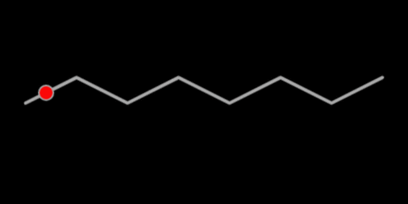

パスに沿ったオブジェクトの移動
ゲームを作成していると、動く床などのように一定のルートに従ってオブジェクトを移動させたい時があると思います。 phina.jsを使って、自分なりにその処理を実装してみました。
動作サンプル
まずは以下のサンプルをご覧下さい。線に沿ってオブジェクトが移動します。
- オブジェクトの移動には、非同期処理が行えるtweenerを利用します。
- tweenerの内部処理で使われている**_add**関数で処理をスタックさせています。
- tweenerは、基本的にスタックされた順に非同期処理されるので、次の移動先である各頂点の位置を順番に与えることで、結果としてパスに沿った移動が可能になります。
課題
- 今回のサンプルでは、移動速度が一定になるように各頂点の距離が同一になるように配置しています。
- 一定の時間で移動させるのがtweenerの処理ですので、距離が変わると移動速度も変わることになります。
- 各頂点の距離に応じてdurationを変えると速度を一定にすることが可能になると思われますが、その辺は次回の課題にしたいと思います。